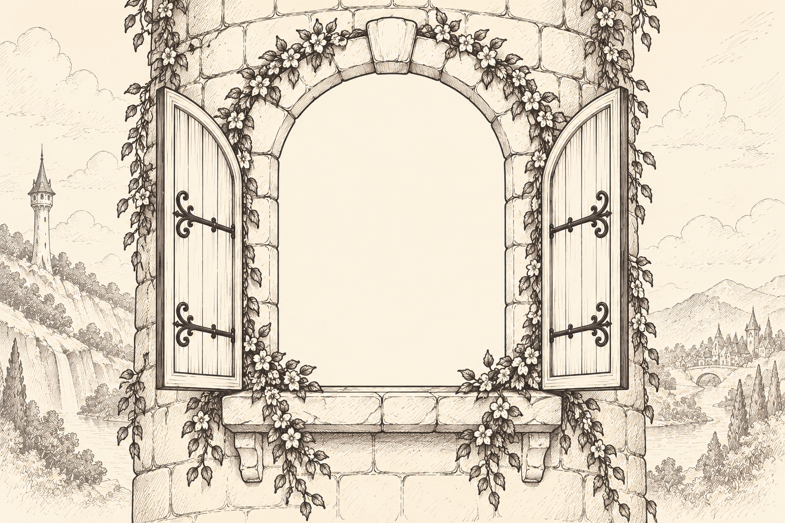
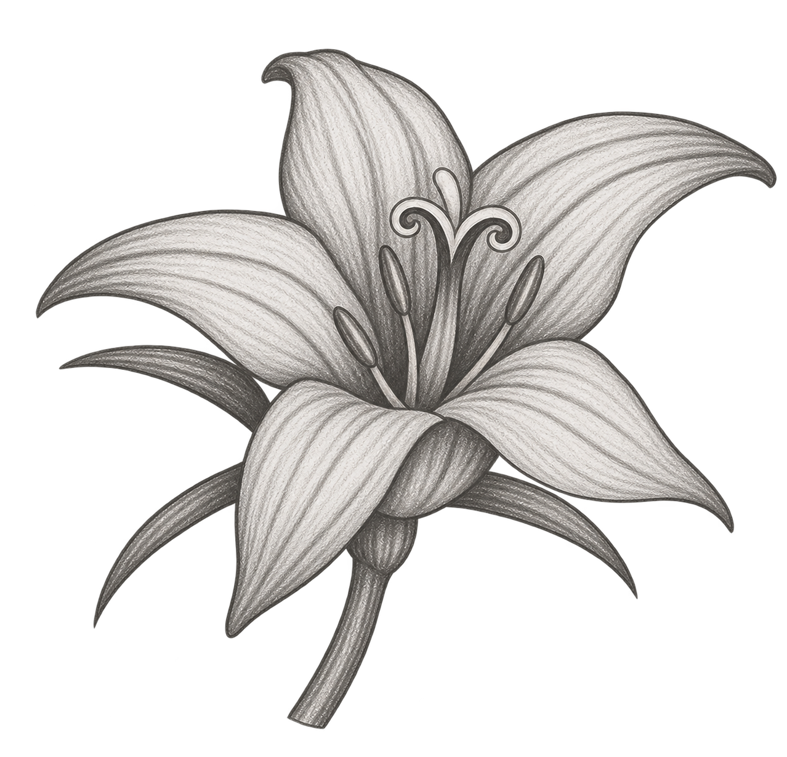
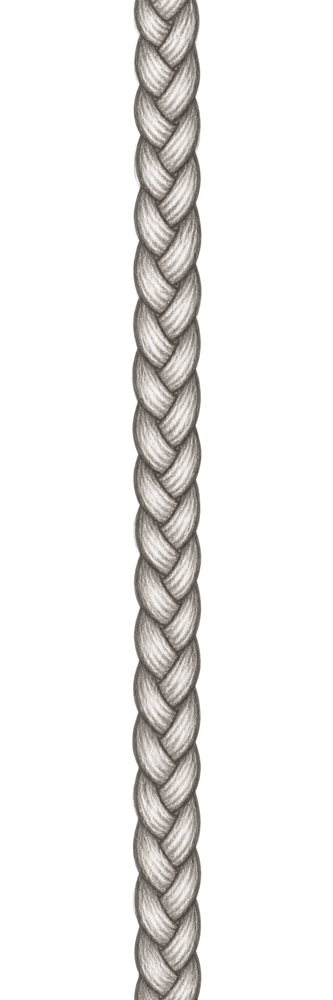
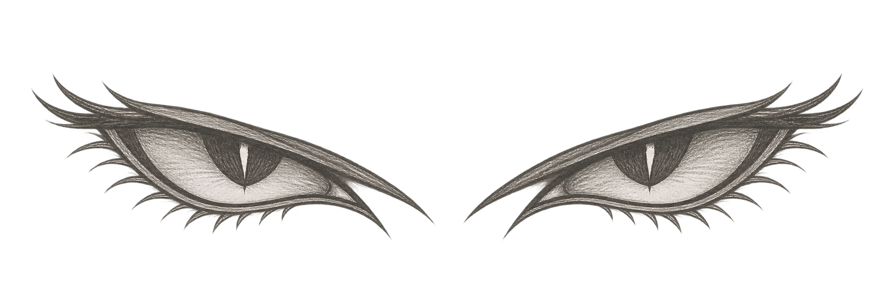
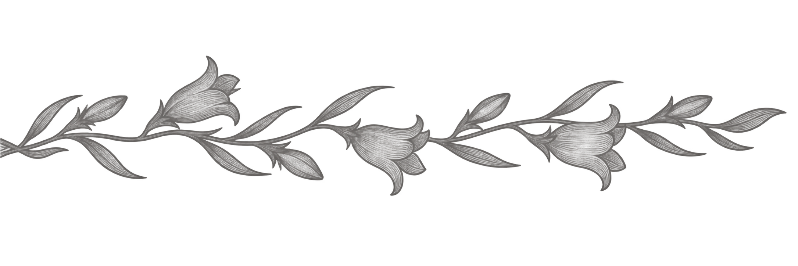

Rapunzel
There were once a man and a woman who had long in vain wished for a child. At length the woman hoped that God was about to grant her desire. These people had a little window at the back of their house from which a splendid garden could be seen, which was full of the most beautiful flowers and herbs. It was, however, surrounded by a high wall, and no one dared to go into it because it belonged to an enchantress, who had great power and was dreaded by all the world. One day the woman was standing by this window and looking down into the garden, when she saw a bed which was planted with the most beautiful rampion (rapunzel), and it looked so fresh and green that she longed for it, she quite pined away, and began to look pale and miserable. Then her husband was alarmed, and asked: ‘What ails you, dear wife?’ ‘Ah,’ she replied, ‘if I can’t eat some of the rampion, which is in the garden behind our house, I shall die.’ The man, who loved her, thought: ‘Sooner than let your wife die, bring her some of the rampion yourself, let it cost what it will.'

At twilight, he clambered down over the wall into the garden of the enchantress, hastily clutched a handful of rampion, and took it to his wife. She at once made herself a salad of it, and ate it greedily. It tasted so good to her—so very good, that the next day she longed for it three times as much as before. If he was to have any rest, her husband must once more descend into the garden. In the gloom of evening therefore, he let himself down again; but when he had clambered down the wall he was terribly afraid, for he saw the enchantress standing before him. ‘How can you dare,’ said she with angry look, ‘descend into my garden and steal my rampion like a thief? You shall suffer for it!’ ‘Ah,’ answered he, ‘let mercy take the place of justice, I only made up my mind to do it out of necessity. My wife saw your rampion from the window, and felt such a longing for it that she would have died if she had not got some to eat.’ Then the enchantress allowed her anger to be softened, and said to him: ‘If the “case be as you say, I will allow you to take away with you as much rampion as you will, only I make one condition, you must give me the child which your wife will bring into the world; it shall be well treated, and I will care for it like a mother.’ The man in his terror consented to everything, and when the woman was brought to bed, the enchantress appeared at once, gave the child the name of Rapunzel, and took it away with her.
Rapunzel grew into the most beautiful child under the sun. When she was twelve years old, the enchantress shut her into a tower, which lay in a forest, and had neither stairs nor door, but quite at the top was a little window. When the enchantress wanted to go in, she placed herself beneath it
and cried:

‘Rapunzel, Rapunzel,
Let down your hair to me.’
Rapunzel had magnificent long hair, fine as spun gold, and when she heard the voice of the enchantress she unfastened her braided tresses, wound them round one of the hooks of the window above, and then the hair fell twenty ells down, and the enchantress climbed up by it.
After a year or two, it came to pass that the king’s son rode through the forest and passed by the tower. Then he heard a song, which was so charming that he stood still and listened. This was Rapunzel, who in her solitude passed her time in letting her sweet voice resound. The king’s son wanted to climb up to her, and looked for the door of the tower, but none was to be found. He rode home, but the singing had so deeply touched his heart, that every day he went out into the forest and listened to it. Once when he was thus standing behind a tree, he saw that an enchantress came there, and he heard how
she cried:
‘Rapunzel, Rapunzel,
Let down your hair to me.’
Then Rapunzel let down the braids of her hair, and the enchantress climbed up to her. ‘If that is the ladder by which one mounts, I too will try my fortune,’ said he, and the next day when it began to grow dark, he went to the tower
and cried:
‘Rapunzel, Rapunzel,
Let down your hair to me.’
Immediately the hair fell down and the king’s son climbed up.
At first Rapunzel was terribly frightened when a man, such as her eyes had never yet beheld, came to her; but the king’s son began to talk to her quite like a friend, and told her that his heart had been so stirred that it had let him have no rest, and he had been forced to see her. Then Rapunzel lost her fear, and when he asked her if she would take him for her husband, and she saw that he was young and handsome, she thought: ‘He will love me more than old Dame Gothel does’; and she said yes, and laid her hand in his. She said: ‘I will willingly go away with you, but I do not know how to get down. Bring with you a skein of silk every time that you come, and I will weave a ladder with it, and when that is ready I will descend, and you will take me on your horse.’ They agreed that until that time he should come to her every evening, for the old woman came by day. The enchantress remarked nothing of this, until once Rapunzel said to her: ‘Tell me, Dame Gothel, how it happens that you are so much heavier for me to draw up than the young king’s son—he is with me in a moment.’ ‘Ah! you wicked child,’ cried the enchantress. ‘What do I hear you say! I thought I had separated you from all the world, and yet you have deceived me!’ In her anger she clutched Rapunzel’s beautiful tresses, wrapped them twice round her left hand, seized a pair of scissors with the right, and snip, snap, they were cut off, and the lovely braids lay on the ground. And she was so pitiless that she took poor Rapunzel into a desert where she had to live in great grief and misery.
On the same day that she cast out Rapunzel, however, the enchantress fastened the braids of hair, which she had cut off, to the hook of the window, and when the king’s son came
and cried:
‘Rapunzel, Rapunzel,
Let down your hair to me.’

she let the hair down. The king’s son ascended, but instead of finding his dearest Rapunzel, he found the enchantress, who gazed at him with wicked and venomous looks. ‘Aha!’ she cried mockingly, ‘you would fetch your dearest, but the beautiful bird sits no longer singing in the nest; the cat has got it, and will scratch out your eyes as well. Rapunzel is lost to you; you will never see her again.’ The king’s son was beside himself with pain, and in his despair he leapt down from the tower. He escaped with his life, but the thorns into which he fell pierced his eyes. Then he wandered quite blind about the forest, ate nothing but roots and berries, and did naught but lament and weep over the loss of his dearest wife. Thus he roamed about in misery for some years, and at length came to the desert where Rapunzel, with the twins to which she had given birth, a boy and a girl, lived in wretchedness. He heard a voice, and it seemed so familiar to him that he went towards it, and when he approached, Rapunzel knew him and fell on his neck and wept. Two of her tears wetted his eyes and they grew clear again, and he could see with them as before. He led her to his kingdom where he was joyfully received, and they lived for a long time afterwards, happy and contented.
